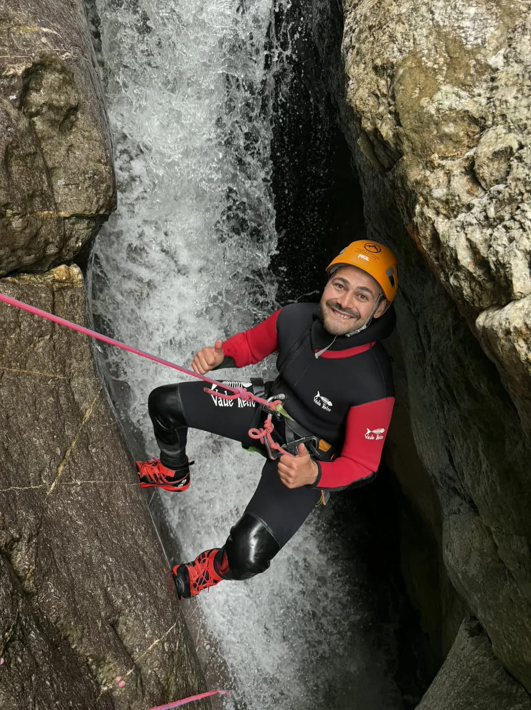
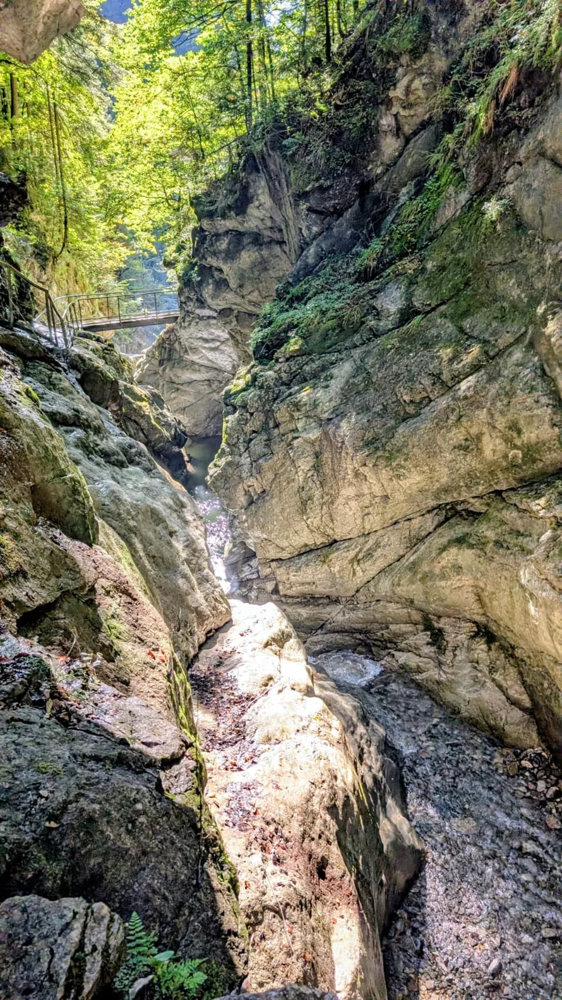

Person und Arbeitsweise
Erfahrung im Canyon und ein klarer Blick auf die Starzlachklamm.
Wenn du vor einer Tour wissen willst, wer schreibt, woher die Erfahrung kommt und worauf sich die Einschätzungen stützen, findest du hier die wichtigsten Hintergründe zu Person, Praxis und Arbeitsweise.

Mario ist ein leidenschaftlicher Canyoning-Enthusiast mit über einem Jahrzehnt Erfahrung im Bergsport und der Erkundung von Schluchten weltweit. Als zertifizierter Guide, autorisiert beim Tiroler Bergsportführerverband, teilt er sein Wissen und seine Begeisterung für das Canyoning durch diesen Guide, um anderen dabei zu helfen, die Schönheit und Herausforderungen der Starzlachklamm sicher zu erleben.
- Wofür du hier Orientierung findest
- Für Fragen zu Ablauf, Anspruch und Vorbereitung vor einer Tour in der Starzlachklamm.
- Eigene Fotos und Videos
- Sie zeigen Schlucht, Wasser und Tourcharakter so, wie Suchende sie später tatsächlich erleben.
- Worauf du dich verlassen kannst
- Ruhige Sprache, klare Antworten und nachvollziehbare Einschätzung statt Werbedruck.
- Buchung
- Am Ende führt ein externer Link direkt zur Partnerseite von BlueRiver.

